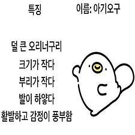

오구 자기소개


오리너구리의 칙칙한 색깔만 오리처럼 바꾼 후 단순화된 모습이다.
둥그렇고 친근한 디자인이 하찮은 몸짓이나 말투와 어우러져 견딜 수 없을 정도로 귀엽다는 평이다.
초기작에는 물갈퀴가 있었으나 지금은 그냥 둥글게 표현했고 관련 캐릭터인 유년기 오구 는 노란색 덩어리조차 없이 몸통과 한 덩어리다.
오구가 아기오구 보다 나이가 많다는 점을 제외하면 두 캐릭터의 관계, 나이, 성별, 직업 등 거의 대부분의 설정이 모호하다.
구체적으로 나이를 설정하면 추후의 작품이 제한되기 때문에 일부러 자세한 설정을 공개하지 않는 듯하다.
성격은 한마디로 정말 하찮은 오리너구리.
기본적으로 심성은 착하고 따뜻하긴 하지만 경우에 따라
노래를 즐기다가
아기오구를 밟아버렸어도 그냥 무시하거나,
아기오구와 산을 오를때 오구는 아기오구 가방에 있는 모든 음식을 다 먹으면서
정작 오구
가방속에는 자기가 쓸 하트 베개 같은 것만 넣는 하찮은 모습
을 보여주기도 한다.
오구의 시작은 바로 오리너구리 램프![오리너구리 램프]() 다.
다.
도예를 전공하는 문종범 작가는 자연에 존재하는 부분을 관찰하고 주관적인 감성으로 재창작을 하고 있다.
오리너구리는 처음에 여자친구에게 환심을 사려는 목적으로 귀여운걸 찾다가
우연치 않게 전구가 오리너구리의 꼬리와 비슷하다 느껴 오리너구리로 작업을 시작하게 되었다.
다만 초창기의 전구와는 다르게 너무 크다고 생각하여 머리위에 붙이는 오일램프가 제작되었다.
실제로 이 램프는 펀딩으로 판매하였으며, 프로토타입의 꼬리전구 오리너구리는 졸업전시로 사용했는지,
홍익대학교 재학 시절 인터뷰들과 홍익대 동문들에게 여러번 알려져왔다.
대학내일 인터뷰 클레이 파크 인터뷰 요약하자면, 여자친구를 위해 시작한 오리너구리 램프가
대학교 졸업전시회로 쓰이고 하나의 이모티콘이 되고 그것이 프렌차이즈화 되었다 보면 된다.
아기오구 보다 더 어린 과거의 오구로 '유년기 오구'가 있는데 특이하게도
유년기 오구는 홀로 생활하는 상황에도 불구하고 부리에 작대기도 긋지 않을정도로
아기오구가 갓 알에서 깨어났을때 보다 더 작고 연약하다.
아기오구는 어린 시절부터 오구에게 자라오고 친구들과 지내면서 밝고 긍정적인 성격을 지녔으나 유년기 오구는 그러지 못해서 인지
유년기 시절부터 혼자 살아남기 위해 탄단지와 채소를 챙겨먹고 운동과 공부를 자신에게 보이는 악마의 도움으로 꾸준히 하였다고 한다.